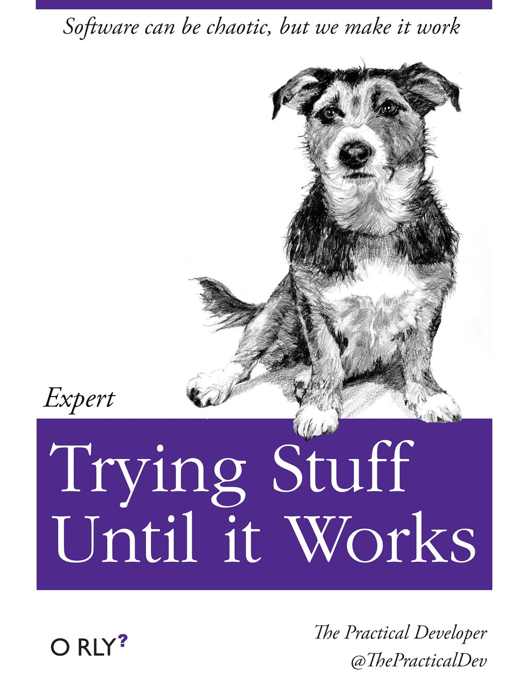
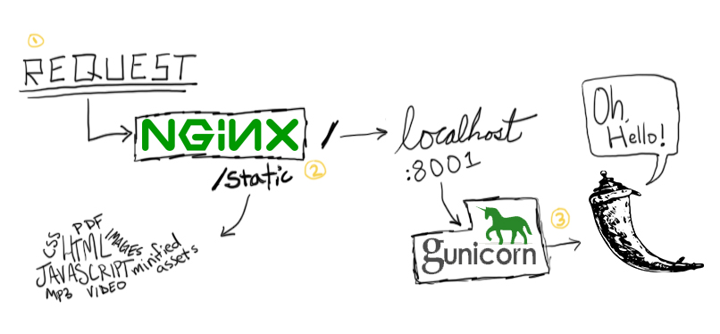

 Após o desenvolvimento e testes de uma aplicação, é necessário torná-la disponível para o cliente final configurando o servidor. Essa etapa é denominada deployment e é a parte mais legal (só que não) de todo o processo: inúmeros bugs podem surgir e você não faz ideia o por quê não funciona.

Para tornar menos problemático o processo de deploy, devops propõe muitas coisas que podem ajudar como entrega contínua, versionamento de código, integração contínua, metodologias ágeis etc. É uma área realmente bacana de estudar.
Infelizmente devido ao curto prazo de entrega desta aplicação, não consegui brincar um pouco com Docker neste projeto mas facilitaria e muito.
Em Java este processo se resume em gerar o .war e configurar o Apache. Caso queira saber mais:
http://pt.stackoverflow.com/questions/58729/o-que-%C3%A9-deploy
Para quem nunca desenvolveu além de aplicações acadêmicas, a grande pergunta é por quê simplesmente não executar:
$ python manage.py runserver
$ python app.py
Este "servidor" serve somente para desenvolvimento e testes locais, não é adequado para lidar com inúmeras requisições de usuários e não possui nenhuma confiabilidade de segurança.
Overview
- python 3.5.1
- django 1.10.0
- gunicorn
- nginx
Quando alguém enviar alguma requisição http (GET, POST, UPDATE etc.), o nginx é o responsável por dizer o que fazer com ela. Nos arquivos do Django, irá ter um arquivo urls.py que diz ao nginx qual código deverá ser executado de acordo com a path e código http recebido.
from django.conf.urls import url
from . import views
urlpatterns = [
url(r'^$', views.index, name='index'),
]
Para seja possível o nginx lidar com o Django, é necessário que o gunicorn faça a ponte entre os dois.

Ambiente virtual
É ideal isolar os frameworks usados com o virtualenv para evitar conflitos com outros projetos, ainda mais quando há Python 2.7 e Python 3.5 no mesmo sistema.
Para saber mais leia:
https://pythonhelp.wordpress.com/2012/10/17/virtualenv-ambientes-virtuais-para-desenvolvimento/
Configuração do servidor
Todo processo descrito pode e deve ser automatizado para evitar erros e agilizar o processo. Antes de tudo, não havia feito a configuração do DNS e por se tratar de uma aplicação de site pessoal que exigia atualização somente de imagens, javascript e HTML não foi necessário me preocupar com zero deployment downtime.
Lembre-se de setar o debug para falso antes de liberar para produção, qualquer erro será exibido para o usuário final e pode facilitar o pentest. Após a instalação do nginx, suba para verificar a mensagem default do nginx.
Provavelmente o diretório do projeto é algo como:
.
├── __init__.py
├── settings.py
├── static
│ ├── css
│ │ ├── bootstrap.css
│ │ ├── combo.css
│ │ ├── font-awesome.min.css
│ │ └── raleway.css
│ ├── fonts
│ │ ├── fontawesome-webfont.ttf
│ │ ├── fontawesome-webfont.woff
│ │ ├── FuturaHeavy.ttf
│ │ ├── Futura_ICG.ttf
│ │ └── FuturaLight.ttf
│ ├── html
│ │ ├── footer.html
│ │ └── mainmenu.html
│ ├── img
│ │ ├── estrela.png
│ │ ├── joao-whitaker.jpg
│ │ ├── logo-branco.jpg
│ │ ├── logo-preto.jpg
│ └── js
│ ├── analytics.js
│ ├── angular.min.js
│ ├── bootstrap.min.js
│ ├── connectionfacebook.js
│ ├── jquery-2.1.1.min.js
│ └── w3data.js
├── templates
│ ├── colabore.html
│ ├── index.html
├── urls.py
└── wsgi.py
É essencial inserir o HTML, CSS e JS no diretório static e separar do backend. Edite o arquivo settings.py inserindo a path de static, setando DEBUG=False e adicionando os seus domínios em ALLOWED_HOSTS.
STATIC_URL = '/static/'
STATIC_ROOT = os.path.join(BASE_DIR, "static")
STATICFILES_DIRS = (os.path.join(BASE_DIR, "sfiles"), )
Crie um diretório no servidor em /var/www/seu_projeto, todo seu projeto django deve estar neste diretório. Após configurar o diretório de arquivos estátios, execute:
$ python manage.py collectstatic --digitar yes para confirmar
Crie o arquivo de script do gunicorn chamando gunicorn_start.sh. Não esqueça de editar.
#!/bin/bash
NAME="seu-projeto" #Name of the application (*)
DJANGODIR=/var/www/seu_projeto/my-website # Django project directory (*)
SOCKFILE=/var/www/seu_projeto/run/gunicorn.sock # we will communicate using this unix socket (*)
USER=ubuntu # the user to run as (*)
GROUP=webdata # the group to run as (*)
NUM_WORKERS=1 # how many worker processes should Gunicorn spawn (*)
DJANGO_SETTINGS_MODULE=seu_projeto.settings # which settings file should Django use (*)
DJANGO_WSGI_MODULE=seu_projeto.wsgi # WSGI module name (*)
echo "Starting $NAME as `whoami`"
# Activate the virtual environment
cd $DJANGODIR
source /var/www/seu_projeto/venv/bin/activate
export DJANGO_SETTINGS_MODULE=$DJANGO_SETTINGS_MODULE
export PYTHONPATH=$DJANGODIR:$PYTHONPATH
# Create the run directory if it doesn't exist
RUNDIR=$(dirname $SOCKFILE)
test -d $RUNDIR || mkdir -p $RUNDIR
# Start your Django Unicorn
# Programs meant to be run under supervisor should not daemonize themselves (do not use --daemon)
exec /var/www/seu_projeto/venv/bin/gunicorn ${DJANGO_WSGI_MODULE}:application \
--name $NAME \
--workers $NUM_WORKERS \
--user $USER \
--bind=unix:$SOCKFILE
Dê permissão de executável para o script com chmod a+x.
Para configurar o nginx, basta editar o arquivo em /etc/nginx/nginx.conf. A seguinte configuração deveria seguir o padrão do Apache e deixar o nginx.conf somente para configurações de níveis gerais. Leia o artigo de Vitor Lobo sobre confgurações do nginx:
Desvendando o Nginx
http://blog.ti.lemaf.ufla.br/2016/07/29/desvendando-o-nginx-parte-1/
nginx.conf
upstream test_server {
server unix:/var/www/seu_projeto/run/gunicorn.sock fail_timeout=10s;
}
# This is not neccessary - it's just commonly used
# it just redirects example.com -> www.example.com
# so it isn't treated as two separate websites
server {
listen 80;
server_name example.com;
return 301 $scheme://www.example.com$request_uri;
}
server {
listen 80;
server_name www.example.com;
client_max_body_size 4G;
access_log /var/www/seu_projeto/logs/nginx-access.log;
error_log /var/www/seu_projeto/logs/nginx-error.log warn;
location /static/ {
autoindex on;
alias /var/www/seu_projeto/seu-projeto/static/;
}
location / {
proxy_set_header X-Forwarded-For $proxy_add_x_forwarded_for;
proxy_set_header Host $http_host;
proxy_redirect off;
if (!-f $request_filename) {
proxy_pass http://test_server;
break;
}
}
#For favicon
location /favicon.ico {
alias /var/www/seu_projeto/seu-projeto/static/img/favicon.ico;
}
#For robots.txt
location /robots.txt {
alias /var/www/seu_projeto/seu-projeto/static/robots.txt ;
}
# Error pages
error_page 500 502 503 504 /500.html;
location = /500.html {
root /var/www/seu_projeto/seu-projeto/static/;
}
}
No meu caso, tive muitos problemas com o conteúdo que estava dentro de /static como css e js. Não era redirecionado cada um para a respectiva pasta e tive que inserir manualmente a path inteira:
location /static/css/ {
include /etc/nginx/mime.types;
alias /var/www/seu_projeto/seu-projeto/static/css/;
}
location /static/js/ {
include /etc/nginx/mime.types;
alias /var/www/seu_projeto/seu-projeto/static/js/;
}
Agora basta subir novamente o servidor e executar o gunicorn.
$ pwd
/var/www/seu_projeto/
$ sudo service nginx start
$ ./gunicorn_start.sh
As únicas alterações do projeto eram em /static então o processo se resumia em git pull, cp -a /static para /var/www/seu_projeto e python manage.py collecstatic para inserir novas atualizações. Lembre-se de automatizar todo seu processo e melhorar os scripts descritos, há vários artigos gratuitos da ThoughtWorks sobre como melhorar o processo de deploy.
E claro, mantenha a calma se algo der errado.

Referências
Esse post teve como objetivo ser útil e rápido e por isso, utilizei as etapas essenciais do seguinte artigo. Os scripts são de autoria de seu autor.
http://tutos.readthedocs.io/en/latest/source/ndg.html
Kickstarting Flask on Ubuntu - Setup and Deployment
https://realpython.com/blog/python/kickstarting-flask-on-ubuntu-setup-and-deployment/
WSGI Servers
https://www.fullstackpython.com/wsgi-servers.html
Deploying nginx + django + python 3
http://tutos.readthedocs.io/en/latest/source/ndg.html